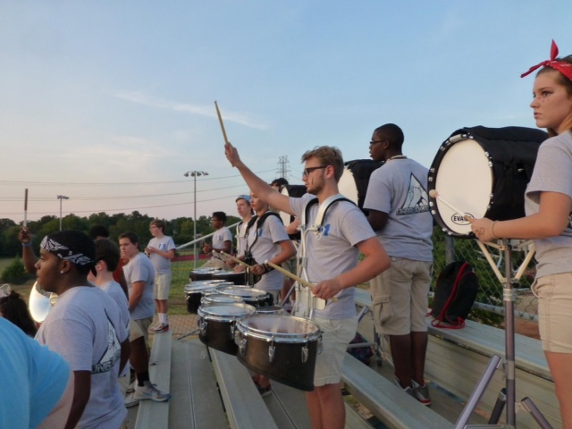
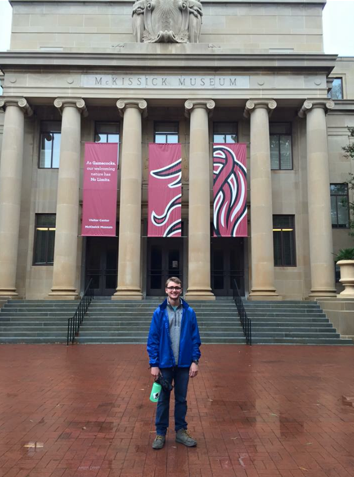

I was born on March 20th, 1999, in Shelby, North Carolina. I loved playing with Lego bricks and in my back yard. My best friend was named Matthew. When I was seven years old, my family moved to Greenville, South Carolina. I went to Shannon Forest Christian School for the rest of 1st grade through 3rd grade. For fourth and fifth grade, I went to Pelham Road, then to Beck for middle school, and finally J.L. Mann for high school.
Now, I am seventeen years old. I am a senior at J.L. Mann. This will be my fourth year in the marching band and my first year as the Drumline Captain. I am a Life Scout, actively trying to get my Eagle rank. In my free time, I like to play guitar, hike, watch movies, and eat.
My family lives in a town house in Shadow Moss. My mom owns a vintage furniture store called Cottage Grove Vintage Market, where I help her move furniture around the store and pick up and deliver items to customers. I am a lifeguard for Sweetwater Pools, where I spent the majority of my summer. Currently, my family has two dogs and one cat. We are also hosting a German exchange student for the year. My dad works downtown for a company called OOBE, which makes apparel for companies such as Chick-fil-a and Krispy Kreme.
I'm not quite sure where I want to go to college. However, I am looking at Clemson, USC, and Wofford as my top three choices. I think I want to go into the medical field for my career, but I am leaving my options open. Hopefully I will get my Eagle Scout rank in the next few months. After that, I'm not sure where my life will take me.
